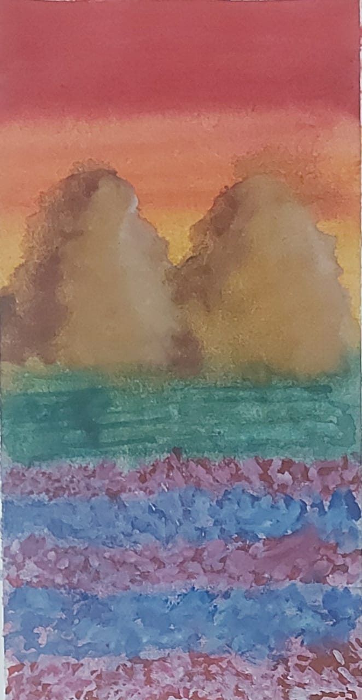
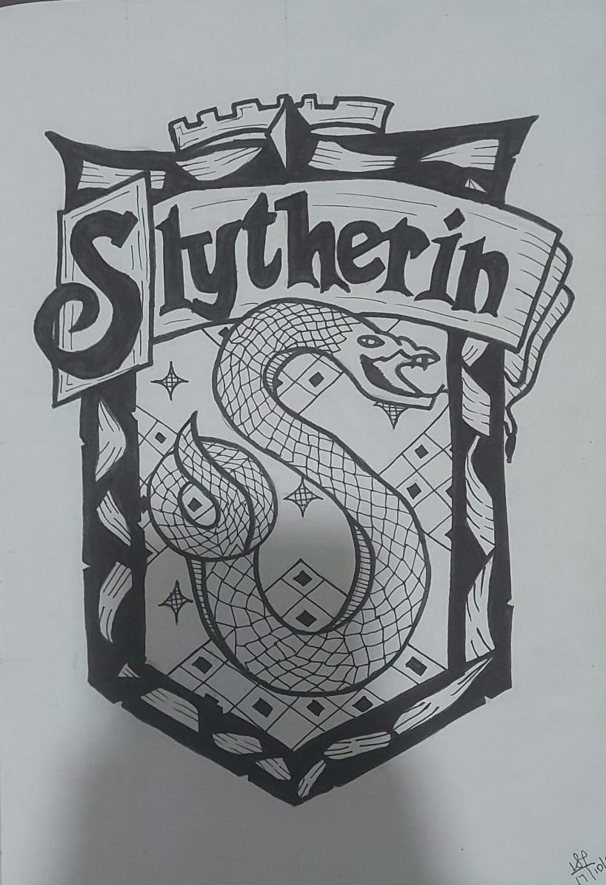
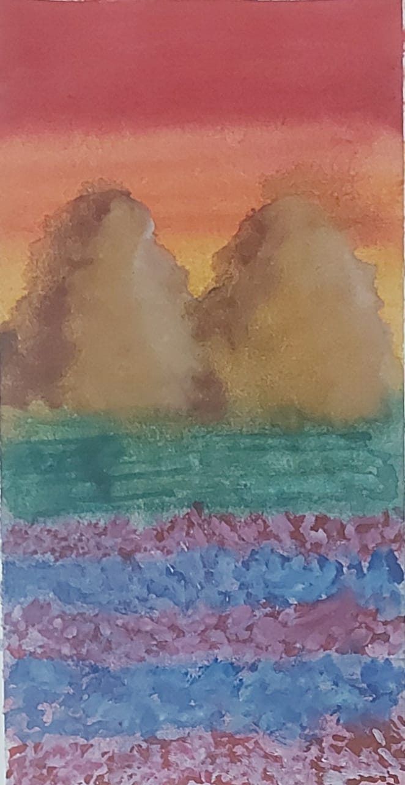
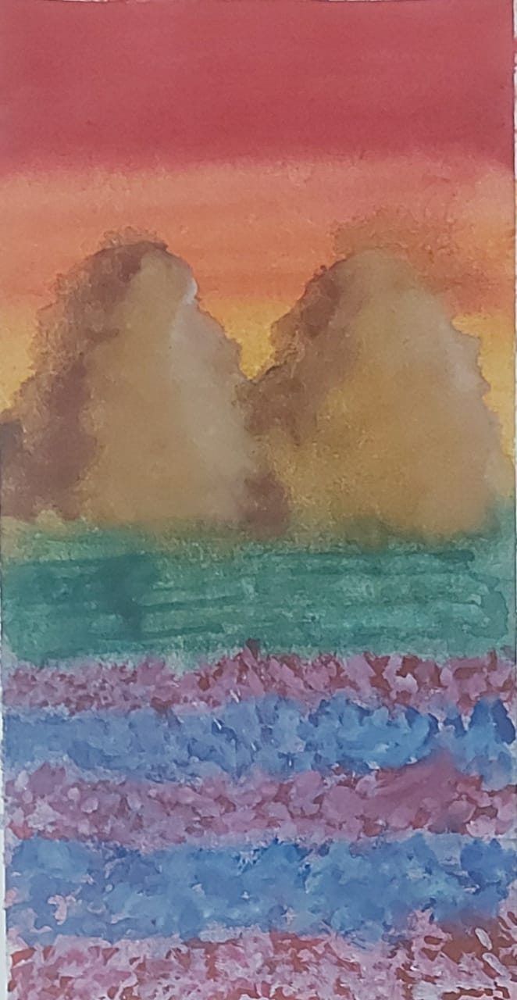
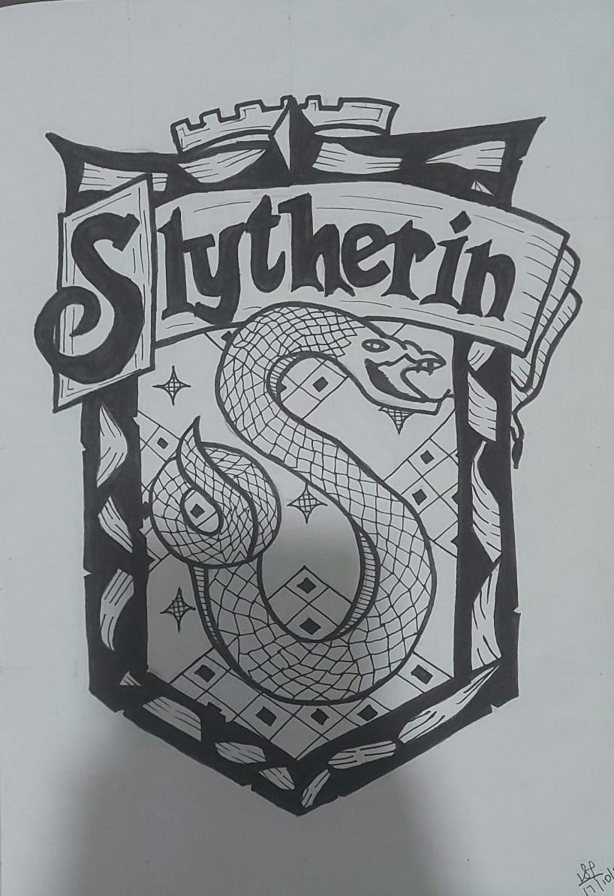
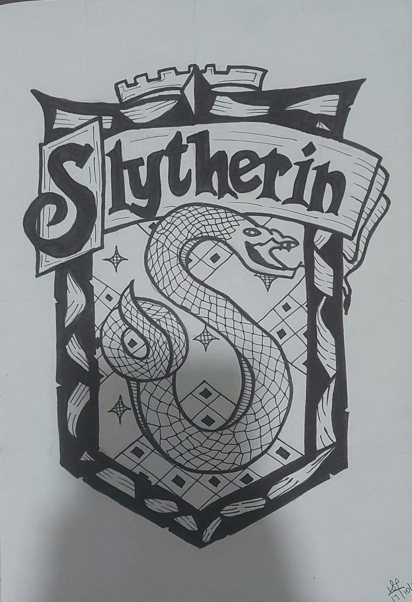

Hi. I am Varchasvi Pandey. I am a grade 6 student who studies in Villa Theresa High School, Mumbai, Maharashtra - India. I love to study and my favourite hobby's are Reading, painting and coding. I have recently started in the field of coding and I love it till now. That is how I made this website to let people know about me and how interesting coding is. So I hope you like this website. Enjoy!!!
ABOUT
My Hobby
Reading is one of my favourite hobby. I love reading, whenever I have free time I just take a book and have leisure time with it. It has made me a bookworm in all categories. Sometimes I read fiction, which brings me into another world and at other times I read non-fiction, which tells me about the reality of our world. I find reading very relaxing so it is also one of my ways to loose stress. My favourite author is J.K. Rowling. She is famous for her Harry potter series. She has also released a new book in August,2020 called the Ickabog.
My Favourite Charecters
Here is a poll of the most popular Harry Potter Characters.
Hermione Granger
Hermione Jean Granger is a fictional character in J. K. Rowling's Harry Potter series. She first appears in Harry Potter and the Philosopher's Stone, as a new student on her way to Hogwarts. After Harry and Ron save her from a mountain troll in the girls' restroom, she becomes best friends with them and often uses her quick wit, deft recall, and encyclopaedic knowledge to lend aid in dire situations. Rowling has stated that Hermione resembles herself as a young girl, with her insecurity and fear of failure.
Luna Lovegood
Luna Lovegood is a fictional character in the Harry Potter book series written by J. K. Rowling. The character first appears in Harry Potter and the Order of the Phoenix, in which she is described as having straggly, waist-length dirty-blond hair and a dazed look on her face. Her eyes are "silvery", "misty", and "protuberant" (the last quality serving to give her a "permanently surprised look").Luna is one of my favorite charecter because she is different from others and always believes in her insincts no matter how many oppse her.
Ginny Weasley
Ginevra Molly Weasley is a fictional character in J. K. Rowling's Harry Potter novel series. Ginny is introduced in the first book Harry Potter and the Philosopher's Stone, as the youngest sibling and only girl in the Weasley family. She startes becoming popular from the Harry Potter And The Order of the Phoenix.
MY WORK
As I mentioned earlier that I love to draw, here is some of my artwork


Inspiration
Here are some personalities who have inspired me in art, writing and coding:
(Click on their pictures to go to their websites.)
CHLOE ROSE ART-
I have been drawing my entire life, but during high school, took it more seriously at the age of 16 - teaching myself how to digitally draw. I was born in the Southern end of the UK but moved to the USA when I was 9 where I still currently resideI studied Computer Science at school, but during my studies, I began a Youtube channel to showcase my art and give tips, how to's, hacks, and made more relatable artist content I felt was needed more on Youtube.In October of 2016, my Youtube channel took off with my first video to ever hit 100k within the first week. I spent the next 2 years building my channel up from 3,000 subscribers to now over 440,000, as well as an additional 61,000 on Instagram. I have a total of 28,000,000 video views.I am now a full time artist and social media content creator. I specialize mostly in digital painting in my art career, and in my online video career I handle all filming, presenting, and editing myself.I have worked with many brands online including companies like Skillshare, Wix, Art Amino, Michaels, Wacom, Disney, and Audible. For business inquiries, please contact business@artofchloerose.com
J.K. ROWLING-
Joanne Rowling CH, OBE, HonFRSE, FRCPE, FRSL, better known by her pen name J. K. Rowling, is a British author and philanthropist. She is best known for writing the Harry Potter fantasy series, which has won multiple awards and sold more than 500 million copies, becoming the best-selling book series in history.
Born: 31 July 1965 (age 55 years), Yate, United Kingdom
Full name: Joanne Rowling
Movies: Fantastic Beasts and Where to Find Them, MORE
Children: Jessica Isabel Rowling Arantes, David Gordon Rowling Murray, Mackenzie Jean Rowling Murray
Spouse: Neil Murray (m. 2001), Jorge Arantes (m. 1992–1993)
BILL GATES
William Henry Gates III is an American business magnate, software developer, and philanthropist. He is best known as the co-founder of Microsoft Corporation.
Born: 28 October 1955 (age 65 years), Seattle, Washington, United States
Net worth: 12,010 crores USD (2020) Forbes
Spouse: Melinda Gates (m. 1994)
Children: Rory John Gates, Phoebe Adele Gates, Jennifer Katharine Gates
CONTACT
I hope you enjoyed viewing my website. If you want to get it in touch with me please use this E-MAIL address given below


 



 
